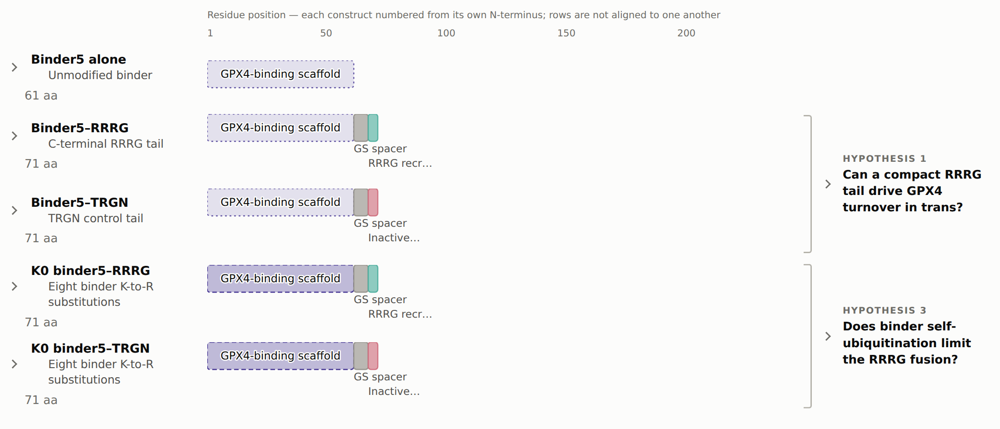
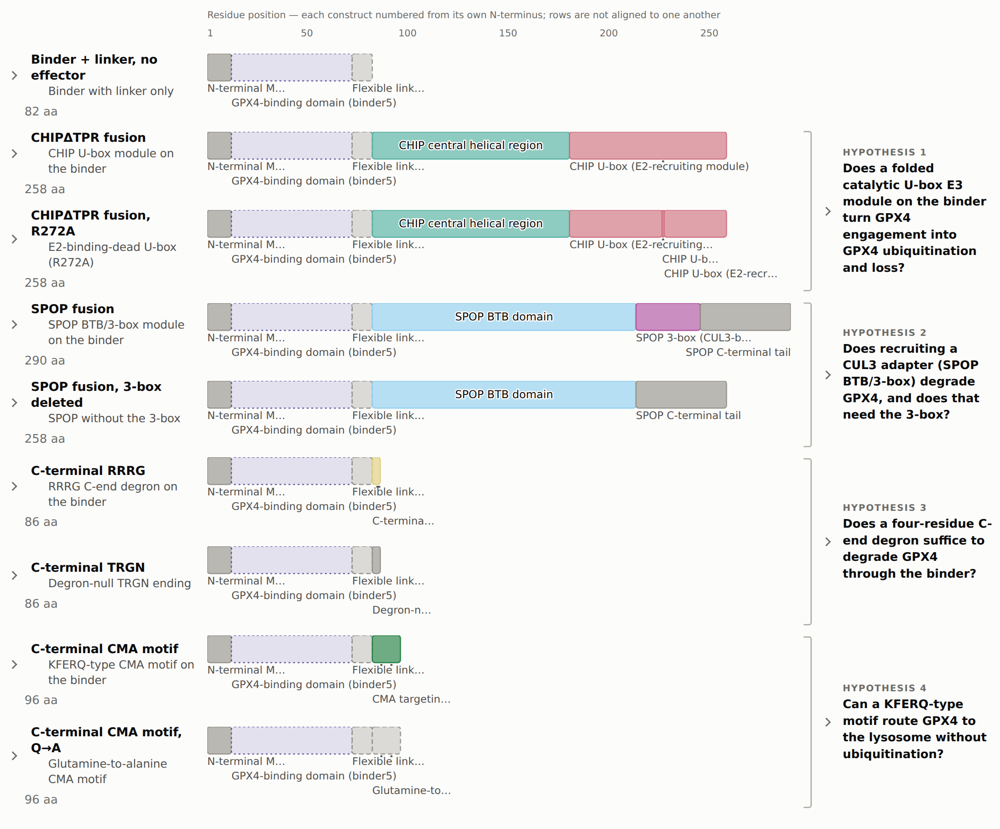

GPT 6.1 sol (high)
Also in this library: a binder with a KLHDC2-recognition tail and a blocked version of it, and a CHIP fusion with an E2-interaction mutant and a binder-free CHIP control.
Construct Maps / GPX4: from binder to degrader
Binding GPX4 does not remove it. There are two published ways to turn a binder into a degrader. One is to attach a short C-terminal degron, as in a four-residue RRRG bioPROTAC that degraded cytosolic and membrane targets 1. The other is to fuse the binder to an E3 ligase module, as when the substrate-binding domain of the ligase CHIP was replaced by a designed binder 2. Binder5 was designed with BindCraft to bind GPX4, an enzyme that protects cells from ferroptosis. The question is which route turns it into a degrader.
The prompt we gave GPT and Claude
Design a library of constructs to turn binder5, a BindCraft-designed binder to human GPX4 (P36969), into a degrader that removes GPX4 rather than only binding it. Only use literature published before 2026-01-01.
GPT 6.1 sol (high)
Also in this library: a binder with a KLHDC2-recognition tail and a blocked version of it, and a CHIP fusion with an E2-interaction mutant and a binder-free CHIP control.
Claude Sonnet 5.5 (high)
Also in this library: a SPOP fusion and a version without its 3-box, a KFERQ-type motif that routes proteins to the lysosome and its inactive form, and a CHIP fusion with an E2-binding-dead mutant.
Both libraries pair every active construct with a control that differs in one step only, so any loss of GPX4 can be assigned to the route and not to binding. They differ in how many routes they compare and in how they handle the binder's own lysines.

RRRG is a short degron at the end of a protein that an E3 ligase can read. In a published bioPROTAC it degraded targets when attached to a nanobody or a leucine zipper, with TRGN as the inactive comparison 1. GPX4 is built the same way here. Binder5 has eight lysines that could be ubiquitinated themselves, so the degron might destroy the binder before it removes GPX4. Changing all eight to arginine separates the two possibilities.
The record notes that RRRG may mainly destabilize the binder, and that the E3 ligase that reads it, and how it would reach GPX4, are unknown.
D02 from the design recordD02 in GPT 6.1 sol (high). Adds the published compact-tail architecture while retaining the binder core.
The routes lead to different compartments, so the rescue experiments tell them apart. A proteasome inhibitor should rescue the degron, CHIP and SPOP constructs, with a neddylation inhibitor also rescuing SPOP, which needs a cullin. A lysosome inhibitor, and not a proteasome inhibitor, should rescue the lysosomal motif. The CHIP fusion follows the design in which a binder replaces the ligase's own substrate-binding domain 2.
The lysosomal route is motivated by the finding that GPX4 is degraded by chaperone-mediated autophagy during ferroptosis 3. The record warns that this route needs the substrate to unfold, which a tight GPX4–binder complex may prevent.
ctm from the design recordctm in Claude Sonnet 5.5 (high)The paper, published in 2026, started from the same binder, which bound GPX4 with a dissociation constant of about 1.2 µM by surface plasmon resonance 4. It built two chimeras: bdC, the binder with a C-terminal degron (RFLGGREE) designed to satisfy three degron motifs at once, and p-TAC, the binder joined to the VHL ligand peptide ALAPYIP through a GGSGG linker. Affinity purification and mass spectrometry linked the degron to six E3 ligases and pointed to the Cul2-RING complex 4.
Adding the synthetic peptides to cells did not lower GPX4 at 1.25 to 80 µM. At about 6,000 Da they entered cells poorly and clumped in the medium, so the authors expressed the chimeras from plasmids instead 4. Expressed bdC lowered GPX4 more than expressed p-TAC, beginning at 12 hours and clearly by 24 hours in three cell lines. The proteasome inhibitor MG132 reversed the loss, bdC increased GPX4 polyubiquitination, and a version with the degron scrambled (bdCm, RFGLGEER) did not, so the intact degron was required 4. Proteomics showed GPX4 falling, along with 95 proteins past the same threshold, so off-target effects are possible 4.
Both libraries share the paper's two ideas, a C-terminal degron and an E3 recruiter, but with different parts. Both use the RRRG degron from the published bioPROTAC with a TRGN control, where the paper designed its own degron with a scrambled control. Both fuse an E3 module (CHIP in both, SPOP in Claude's), where the paper used a peptide that binds VHL. Neither included the paper's degron or the VHL peptide 4.
Delivery was the paper's main obstacle, and neither library has a construct for it. The chimeras did nothing as synthetic peptides and worked only when expressed in cells, after which the authors packaged the plasmid in cell-membrane nanoparticles 4. Both libraries do require the binder's expression level to be measured and matched across constructs, as a binder level, so differences in how much of each construct is present are not confused with differences in activity.
| Tested in the paper | GPT 6.1 sol (high) | Claude Sonnet 5.5 (high) |
|---|---|---|
| binder5, the designed binderResults: De Novo Design and Validation of Binders Targeting GPX4; Figure 2 | Same editD01binder alone | Same editrefthe binder with a linker |
| The binder fused to a C-terminal degron (bdC, binder5–RFLGGREE)Results: Construction of Binder-Degron Chimeras; Figure 3 | RelatedD02 D04an RRRG tail, and a KLHDC2-recognition tail | Relatedrrrgan RRRG C-end degron |
| A degron-mutant control of the same composition (bdCm, RFGLGEER)Methods: Ubiquitination Assay; Results: Construction of Binder-Degron Chimeras | RelatedD03a TRGN control tail | Relatedtrgna degron-null TRGN ending |
| A peptide-PROTAC: binder5 joined to the VHL ligand ALAPYIP (p-TAC)Results: Construction of Binder-Degron Chimeras | RelatedD08recruits an E3 through a fused CHIP module | Relatedchip spoprecruits an E3 through a fused CHIP or SPOP module |
✓ same edit · ~ related: a different change at the same position, or the same idea · – not proposed. Construct names are the ones each library uses.